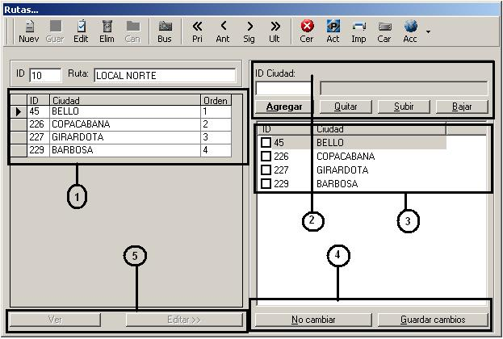

|
Introduccion
Las rutas son ordenamientos logicos de las ciudades de acuerdo a los recorridos
que hacen los vehiculos por las diferentes zonas.
El acceso al formulario para ingresar las rutas se encuentra en el menu principal del sistema:
- Menu [Complementos]
- Menu [Organizacion]
- Menu [Rutas]

Creacion de la ruta
Esta operacion no requiere de ningun conocimiento especial, simplemente
es la creacion de registros mediante las opciones de nuevo, guardar, editar etc.
De acuerdo a la imagen, la creacion de una ruta se basa en dos partes:
1- La creacion de la ruta como tal: Para crear las rutas simplemente utilizamos la
barra de herramientas estandar que tiene los botones de nuevo, editar, guardar etc; luego de tener la ruta creada
podemos presionar el boton [Ver] marcado en la imagen con el numero 5 para ver las ciudades que tiene asignadas,
en el caso de las rutas recien creadas no debe tener ciudades.
2- Asignacion de ciudades: Para asignarle ciudades a la ruta presionamos el boton [Editar] en la parte enumerada
con el 5 en la imagen,
nos aparece un nuevo formulario en la parte derecha donde hay varios campos para llenar informacion.
Nos situamos en el campo ID Ciudad de la seccion 2 en la imagen y digitamos el codigo de la ciudad que vamos a
incluir en la ruta, si no se sabe el codigo presiona F2 y nos sale un cuadro de consulta con todas
las ciudades que tengamos en el sistema. Ya seleccionada la ciudad presionamos la tecla entrar o el boton
agregar de la seccion 2, con eso le vamos agregando ciudades a la lista de la seccion 3.
Con el boton quitar de la seccion 2 pordemos ir quitando las ciudades de la lista y con los botones bajar y subir
le asignamos prioridades al orden de las ciudades.
Terminada la operacion de agregar ciudades, podemos determinar si guardamos o no los cambios con los
botones de la seccion 4. Si deseamos grabar la ruta, presionamos guardar cambio y ya esta creada un nueva ruta.
Informes, reportes, listados
Para sacar un informe de las rutas que hay en el sistema con
ciudades asignadas, damos clic en el menu principal:
- Menu [Informes, reportes y listados]
- Menu [Listados]
- Menu [Rutas]
|